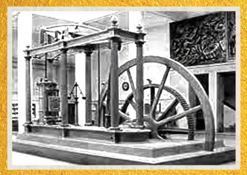

Esta é uma máquina a vapor desenvolvida por James Watt no século XVIII,
um dos marcos da Revolução Industrial. O funcionamento baseia-se no aquecimento de água para gerar vapor,
que, ao expandir-se, move um pistão conectado a uma grande roda.
O movimento contínuo desta roda transformava a energia do vapor em trabalho mecânico, impulsionando
fábricas, locomotivas e navios. A inovação de Watt, que incluiu o condensador separado,
tornou as máquinas muito mais eficientes, mudando para sempre os transportes e a produção industrial.